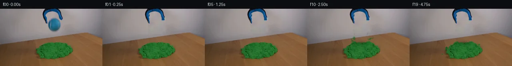

![首帧]()

Round 00
2026-11-05T07:00:38.843881+00:00像素候选变化代码 +394/−0inspection 更新
pixels 5955439f47976ef3 · code 98cc61542e0d5c50
查看本轮 generate.py 真实 diff
--- previous/generate.py
+++ current/generate.py
@@ -0,0 +1,394 @@
+"""PixelWorld case_0016 generator.
+
+Static locked-off shot: blue-black grabber releases a cyan tennis ball over a pile
+of green kinetic sand. Frame 00 is copied verbatim from first_frame.png; later frames
+are built with local pixel operations only:
+
+ * wall corridor behind the falling ball is inpainted from a polynomial wall model
+ (least-squares fit on clean frame-0 wall pixels) plus matched soft noise;
+ * the tennis ball is an analytic shaded sphere (two curved seams), composited with
+ temporal supersampling for motion blur;
+ * the sand pile is a per-column image warp of the original pile driven by a
+ rim/ripple displacement field, with a soft contact shadow and ballistic clumps.
+"""
+import numpy as np
+from PIL import Image
+from scipy.ndimage import map_coordinates, gaussian_filter
+
+rng = np.random.default_rng(7)
+H, W = 144, 256
+DT = 0.25
+SS = 8 # temporal substeps per frame
+SHUT = 0.20 # seconds
+
+f0 = np.array(Image.open('first_frame.png').convert('RGB')).astype(np.float32)
+R0, G0, B0 = [f0[:, :, c] for c in range(3)]
+yy, xx = np.mgrid[0:H, 0:W].astype(np.float32)
+
+# ---------------------------------------------------------------- masks
+brown = (R0 > 70) & (R0 > G0 + 8) & (G0 > B0 + 5)
+green = (G0 > R0 + 25) & (G0 > B0 + 25)
+arm_blue = (B0 > 100) & (B0 > R0 + 50) & (R0 < 70) & (G0 < 100)
+black = (R0 < 45) & (G0 < 45) & (B0 < 55)
+ballm = (B0 > R0 + 15) & (B0 > 90) & (G0 > 85)
+
+# wall/table line per column
+line = np.full(W, H, np.float32)
+for x in range(W):
+ ys = np.where(brown[:, x])[0]
+ if len(ys):
+ line[x] = ys.min()
+
+# sand top profile per column
+top0 = np.full(W, H, np.float32)
+for x in range(W):
+ ys = np.where(green[:, x])[0]
+ if len(ys):
+ top0[x] = ys.min()
+# fill missing with a smooth dome estimate
+gx = np.arange(W)
+have = top0 < H
+coef = np.polyfit(gx[have], top0[have], 4)
+top_fill = np.polyval(coef, gx)
+for x in range(W):
+ if top0[x] == H:
+ top0[x] = top_fill[x]
+
+# ---------------------------------------------------------------- wall model
+from scipy.ndimage import binary_dilation
+obj = binary_dilation(green | arm_blue | black | ballm, iterations=2)
+wallmask = (yy < line[np.newaxis, :] - 3) & (~obj)
+
+Xf, Yf = xx / 256.0, yy / 144.0
+
+def wall_features(X, Y):
+ X, Y = X.ravel(), Y.ravel()
+ return np.stack([
+ np.ones_like(X), X, Y, X * X, Y * Y, X * Y,
+ X ** 3, Y ** 3, X * X * Y, X * Y * Y,
+ (X - .5) ** 2 + (Y - .4) ** 2], 1)
+
+A = wall_features(Xf, Yf)
+wall = np.zeros_like(f0)
+wm = wallmask.ravel()
+for c in range(3):
+ beta, *_ = np.linalg.lstsq(A[wm], f0[:, :, c].ravel()[wm], rcond=None)
+ wall[:, :, c] = (A @ beta).reshape(H, W)
+
+# matched soft wall noise: a few low-frequency octaves + fine grain
+def value_noise(gy, gx, amp):
+ n = rng.normal(0, 1, (gy, gx, 3)).astype(np.float32)
+ up = np.zeros((H, W, 3), np.float32)
+ for c in range(3):
+ im = Image.fromarray(n[:, :, c], mode='F').resize((W, H), Image.BILINEAR)
+ up[:, :, c] = np.array(im)
+ return up / (up.reshape(-1, 3).std(0).mean() + 1e-6) * amp
+
+wall_noise = (value_noise(14, 24, 2.6) + value_noise(42, 72, 1.4) +
… diff truncated; 307 more lines …